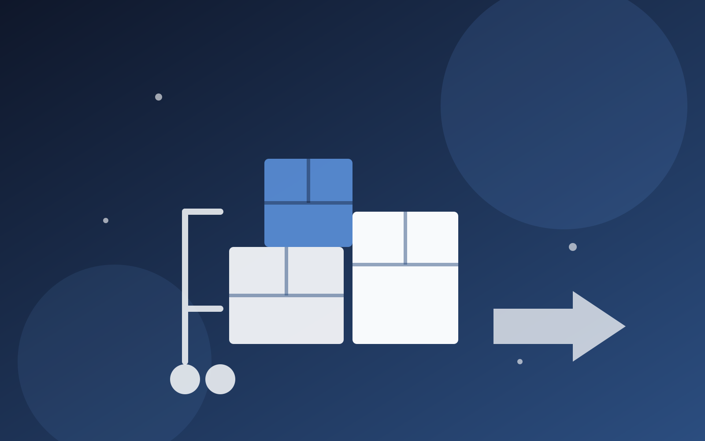

Débarras de logement à Pau : tri, évacuation et nettoyage en une intervention
Appartement, maison, cave, grenier ou succession : nous débarrassons votre bien et pouvons enchaîner avec un nettoyage complet, sans faire intervenir une deuxième entreprise.
Demander un devis gratuitVider un logement encombré, une cave, un grenier ou un bien hérité demande du temps, un véhicule adapté et une bonne connaissance des filières de recyclage. HydroPropreté propose à Pau un service de débarras complet, pensé pour les particuliers comme pour les bailleurs et agences immobilières, avec un atout que peu d'entreprises de débarras peuvent offrir : la possibilité d'enchaîner directement avec un nettoyage professionnel du bien.
Une prestation en deux temps, une seule entreprise
La plupart des entreprises de débarras s'arrêtent une fois le logement vidé, laissant sols et surfaces poussiéreux ou marqués après l'évacuation du mobilier. Comme HydroPropreté est avant tout une entreprise de nettoyage professionnel, nous pouvons proposer une remise en état complète juste après le débarras, dans la même intervention ou dans la foulée : un seul interlocuteur, un seul déplacement, un logement réellement prêt à visiter, louer ou vendre.
Notre méthode
Estimation du volume
Sur place ou par photos, nous évaluons le volume à débarrasser et les contraintes d'accès pour vous transmettre un devis clair.
Tri sur site
Objets à conserver, mobilier valorisable, encombrants et déchets sont triés directement sur place.
Chargement et évacuation
Évacuation vers les filières de recyclage, de revente ou d'élimination adaptées à chaque type d'objet.
Nettoyage final (en option)
Sur demande, le logement débarrassé est nettoyé de fond en comble avant remise des clés.
Contrôle final
Une vérification pièce par pièce garantit un bien vide, propre et prêt à être rendu ou proposé à la location.
Dans quelles situations intervenir
Succession
Vider un logement dans le cadre d'une succession est une étape souvent lourde. Nous intervenons avec discrétion et à votre rythme, pour préparer le bien à la vente ou à la location.
Fin de bail ou changement de locataire
Meubles abandonnés, encombrants laissés par un ancien locataire : nous débarrassons rapidement pour limiter la vacance locative.
Cave, grenier, garage
Ces espaces accumulent souvent des années d'objets divers. Nous les vidons intégralement, même en cas d'accès difficile.
Local professionnel
Fin de bail commercial, déménagement de bureaux ou fermeture de local : nous évacuons mobilier, archives et matériel obsolète.
Zones d'intervention
Nous intervenons à Pau et dans les communes voisines :
Un ordre de grandeur avant votre devis
Le prix final dépend du volume réel, de l'accessibilité et de la valeur des objets récupérés : un devis gratuit et sans engagement affine toujours ces estimations.
Petit volume
Studio, cave, grenier ou quelques pièces de mobilier (jusqu'à 10 m³ environ).
Demander un devisVolume moyen
Appartement complet, 2 à 3 pièces meublées (10 à 25 m³ environ).
Demander un devisGros volume
Maison complète, succession ou local professionnel (25 à 50 m³ environ).
Demander un devisTout savoir sur le débarras à Pau
Après une estimation du volume (sur place ou par photos), nous trions sur site ce qui est à conserver, à recycler ou à évacuer, puis nous chargeons et évacuons vers les filières adaptées. Le lieu débarrassé peut ensuite être nettoyé dans la foulée.
Le mobilier en bon état, les objets de valeur ou les métaux sont valorisés lorsque c'est possible, ce qui peut réduire le montant de votre devis. Le reste est trié et acheminé vers les filières de recyclage ou d'élimination appropriées.
Oui, nous accompagnons régulièrement les familles dans le débarras d'un logement suite à une succession, avec discrétion et à un rythme adapté à la situation.
Oui, c'est même notre spécificité : contrairement à une entreprise de débarras seule, nous pouvons enchaîner avec une remise en état complète du logement en une seule intervention.
Dans certains cas, lorsque la valeur des objets récupérés (mobilier, brocante, métaux) couvre le coût de l'intervention, le débarras peut être proposé à prix réduit voire gratuit. Cela dépend du contenu du logement, évalué lors du devis.
Nous intervenons à Pau ainsi que dans les communes voisines : Billère, Lons, Jurançon, Lescar, Idron et Bizanos.